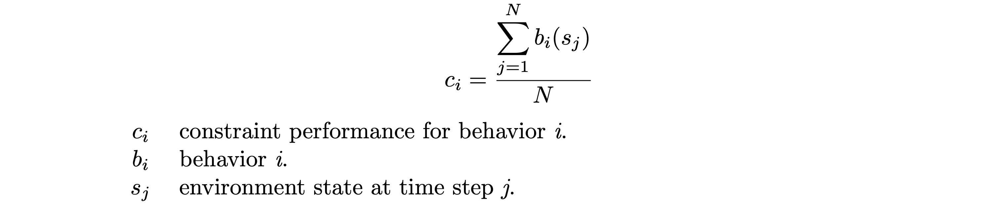
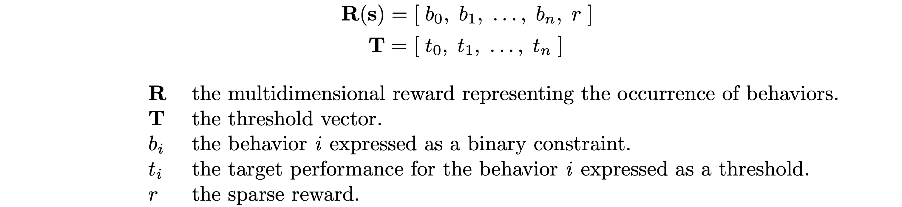
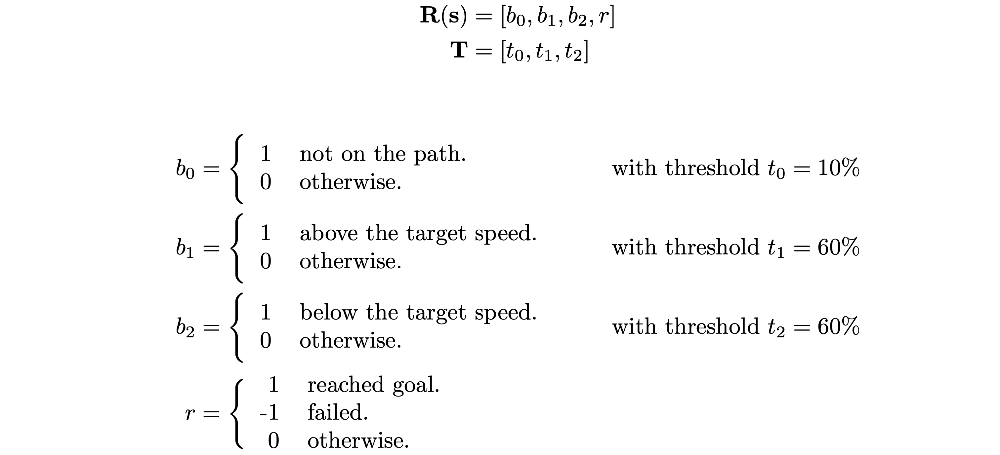
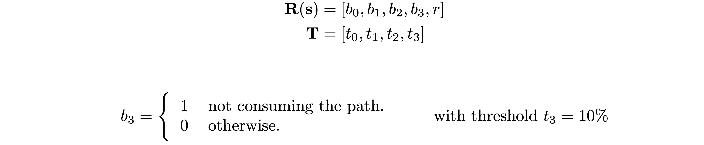

Intro
Reinforcement Learning (RL) is pretty darn useful.
With it, we can teach complex tasks to computers in a similar process as teaching cool tricks to a dog.
For example, in the context of video games, we can teach an RL model to navigate a vehicle in complex terrain.
However, setting up a good RL training proves to be a difficult task.
In particular, the reward shaping process is one of its hindering aspects.
The Constrained Reinforcement Learning framework developed by Julien Roy et al. at Ubisoft La Forge aims to alleviate the reward shaping problem by simplifying the behavior metrics and automating the weighting process.
This project, realized by Joshua Romoff, Gabriel Robert and myself, aimed to demonstrate the effectiveness of the Constrained RL framework.
Our approach was to develop a general use implementation of the framework, and apply it to the problem of vehicle navigation in video games.
After a summer of work, in collaboration with Colin Gaudreau, Julien Varnier and other collaborators of the SmartDrive initiative, we demonstrated that our generalized implementation greatly simplifies the reward shaping process.
This is a promising approach to improve the productivity of Ubisoft game developers.
In this blog post, we provide a brief overview of the vehicle navigation problem, the reward shaping process, and
Constrained RL theory (if you want to know more about this, you should definitely look into the paper or this blog post).
Then we showcase the vehicle navigation Constrained RL implementation – with cool videos!
Vehicle Navigation
There are many uses for a vehicle-operating RL model.
Such as game testing, where game designers can launch models on a variety of paths and verify their feasibility.
A more obvious example is game NPCs, where an RL model navigates in a seemingly more organic way than other solutions.
For this project, we train vehicles in an environment that contains a variety of different terrains which range in difficulty and geometry.
The vehicles are spawned at arbitrary locations in the map, and are given randomly generated paths and target speeds.
Their task consists of navigating to the end of the path, at the correct speed.
The model is given enough environment information to "understand" the problem, such as the distance from the path, elevation angles, obstacle distances, etc.
Reward Shaping
Reward shaping consists of carefully crafting a mathematical function to evaluates the success of an action our model has taken.
The reward is somewhat equivalent to a tasty doggie treat after a successful cool trick, or a dire "bad dog!" after an episode failure.
It is easy to imagine how complex this mathematical function can get for some tasks.
The example of self driving vehicles in video games is one that requires a substantial reward function.
In fact, one of them I've seen at Ubisoft took almost 400 lines of code.
First, let's establish the concept of a reward function.
It provides a way to specify a desired behavior to the model by evaluating the success of an action.
For the vehicle navigation problem, we want the model to drive on the provided path at a certain target speed.
For these behaviors, we will define the following reward function:
In general, the goal of an RL training is to maximize the expected value of the reward function.
Now that we have a function, we can better define the notion of reward shaping.
Simply put, reward shaping is the tweaking of the reward function's components.
It consists of finding the best metrics b0 & b1 to express the desired behaviors and of finding the best weights w0 & w1 to apply to these metrics.
A common situation which necessitates the weighting of behaviors is the following.
Let's assume we launch an unweighted training, i.e. w0 = 1 & w1 = 1.
Upon initialization, the vehicle is already on the path, but is definitely not driving at the correct target speed.
Due to the difference in frequency of these two behaviors, the model is likely to concentrate too much on one, while neglecting the other.
(Which depends on the chosen sign of their reward.)
A knowledgeable developer would take into account these caveats, and immediately construct a reward function with less weight on the most frequent behavior.
However, with increasingly complex tasks, an observation of the model's performance is often required to determine how to change the weighting.
In this case, our vehicle navigation problem can require over a dozen hours of training before yielding significant performances.
In the end, unless you are amongst the RL gods, some reward shaping will almost always be required to get the best results, which could take days, or even weeks!
Constrained Reinforcement Learning
Our Constrained RL framework was developed to alleviate the reward shaping process and hopefully lead to a solution which requires no further parameter tweaking.
Instead of providing a reward as a single value through a well crafted reward function, our framework automatically weights binary behaviors.
For the sake of automating the weighting process, it is difficult to mathematically interpret behavior values when they are expressed as continuous scalars.
For example, how should we interpret the following values?
Is 0.5 good or bad?
We would need some knowledge of what their behavior corresponds to in the environment.
The key step in the research was to express the behaviors as binary values.
This provides a format to interpret behavior values, regardless of their context in the environment.
We define a binary constraint to be a behavior expressed in the following manner:
The negation in the definition is by design - the implementation aims to minimize the constraint occurences.
Indeed, when they're expressed as binary constraints, all behavior values have the same meaning, and therefore we can easily compare them.
But how do we compare them?
This is where the magic happens.
Consider constraint values for N time steps.
We can evaluate the constraint performances with the following definition:

Which is really just a fancy way of defining the percentage of time the behavior is occuring in a sample.
We can now compare constraints in terms of their performances i.e. ci = 30% indicates the behavior bi occured 30% of the time in your sampled batch.
What about automating the weighting of the constraints?
To solve this we need thresholds.
For each constraint ci we define a threshold ti which represents a target performance.
As we know, for each binary constraint bi we have a weight wi.
Using some fancy ML gradient descent tools (Adam Optimization for this implementation), we minimize the following error function with respect to the wi weight dimensions:
The weights are passed through a softmax layer.
Gradient descent through a softmax layer results in the weight update being relative to the magnitude of the other weights, which proves to be useful for assigning priority to poorly performing constraints.
The final component required as input for the Constrained RL implementation (along with binary constraints and thresholds) is the sparse reward.
Unlike the constraints, training will maximize the expected value of the sparse reward.
An extra weight wr is added to the weight vector for the sparse reward (this is similar to the paper's "dummy weight").
However, we let Err( wr ) = 0 for all weight updates.
This way, the sparse reward's weight update will only depend on the softmax gradient.
Thus, the weight will only increase once the other weights have decreased enough.
In other words, once the constraints are satisfied, the training concentrates on maximizing the sparse reward.
Instead of a scalar value, the reward is now a multidimensional vector with the binary constraints and the sparse reward as values.
This reward is computed at every time step during training.
Along with the threshold vector, this is the only information needed for training.

Results
Consider the following configuration with the previously defined path and speed behaviors:

We see two peculiar properties in this configuration: the two speed constraints and their high valued thresholds.
Indeed, the first approach could be to set these thresholds at a lower value since we want the vehicle to be on target sped as much as possible.
But the reason for both of these properties stems from the fact that it is impossible for the vehicle to be exactly on the target speed.
The speed behavior was split in two constraints because it cannot be expressed as a single constraint.
For example, if the constraint were defined as:
Then b1 = 1 for all time steps. The constraint's weight would blow up and the model would get stuck trying to learn this impossible behavior.
It could be argued that the speed behavior could be defined as a single constraint like so:
But defining the width of the range is equivalent to defining a threshold for the behavior.
A lesser width is harder to satisfy than a larger width, as a lesser threshold is harder to satisfy than a larger one.
However, our constraint percentages are compared to thresholds, not ranges.
It is difficult to reason about a threshold value for this ranged constraint definition.
Instead, by splitting this behavior in two constraints, we're actually splitting an equality in two inequalities.
In the context of constraints and thresholds, inequalities are much easier to reason with.
For the high valued thresholds t1 & t2, we start from the above identity.
The first implication comes from the fact that the vehicle is 100% of the time either above or under the target speed.
The second implication comes from the fact that we want our thresholds to be feasible.
If their values summed to less than 100%, then the model would be trying to attain an impossible performance!
We launch the training, and now comes the time to take a deep breath, go for a nap, get coffee, text your mom, or watch the Ubisoft sunrise...
A few hours into training, the vehicles start driving in an unexpected way...
I hear you wondering: "This will cost millions in repairs! Will you get fired?"
First of all, the trucks are virtual, which means I can hide the results and no one will ever discover my failure.
Second of all, we realize the vehicles are in fact satisfying the constraints.
The path constraint is calculated by taking the lateral distance of the vehicle to the path.
The vehicle was staying on the path with respect to the path's left-right axis, but the path constraint wasn't giving any information to the model about the path's front-backward axis.
In fact, the model is executing an optimal behavior with this configuration: upon initialization, turn around and drive at the target speed until the episode ends.
Let's solve this by adding a new constraint!
Let's give the model a the notion of direction by simply adding a binary constraint indicating the behavior of consuming the path.

Here are the results after around 20h of training with this configuration:
Pretty impressive for a simple reward function!
Lastly, the following is a great example of the effectiveness of the Reinforcement Learning paradigm.
It was never explicitly specified to the model that if it spawned backwards, it should turn around.
In fact, the vehicle was never prevented from driving down the path backwards.
The only given metrics were the four binary constraints and the sparse reward.
With this, training was able to deduce this optimal behavior.
What next?
In this project we demonstrated that our Constrained RL framework is a promising simplified approach for training RL models.
At the end of the summer, we presented our results to the SmartDrive initiative.
The conclusion was that this could be a useful tool for game developers, but needs further testing to ensure its robustness.
We also believe it would be useful to apply our implementation to other complex problems for further improvements.